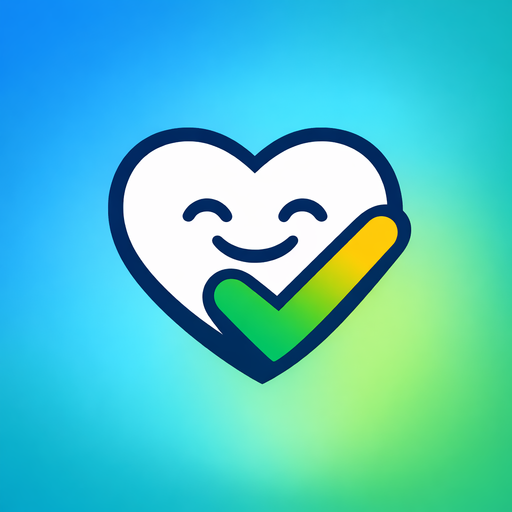
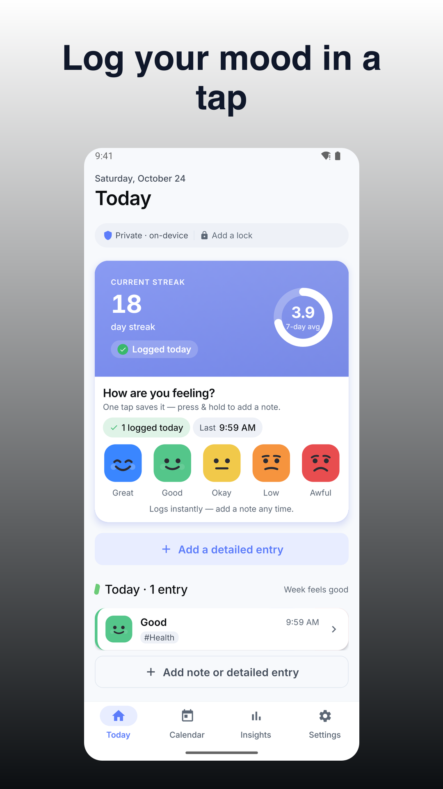
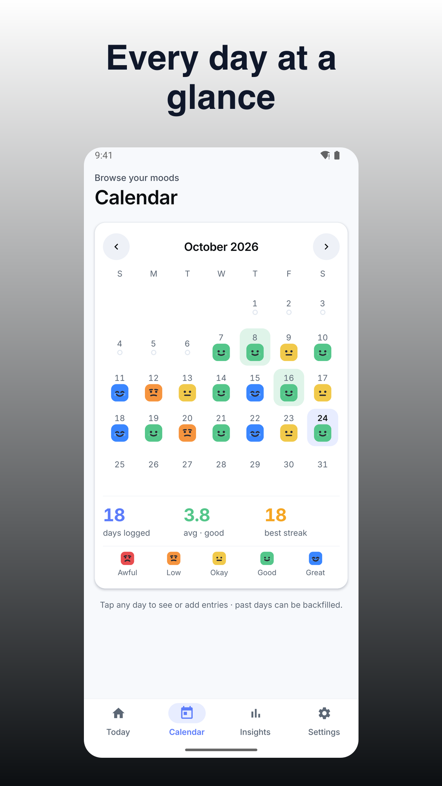
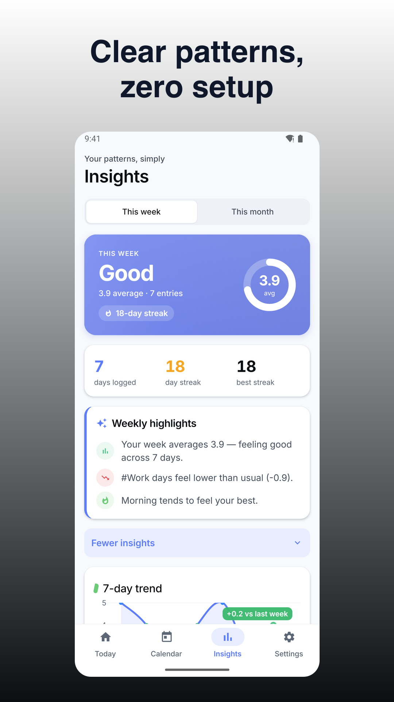
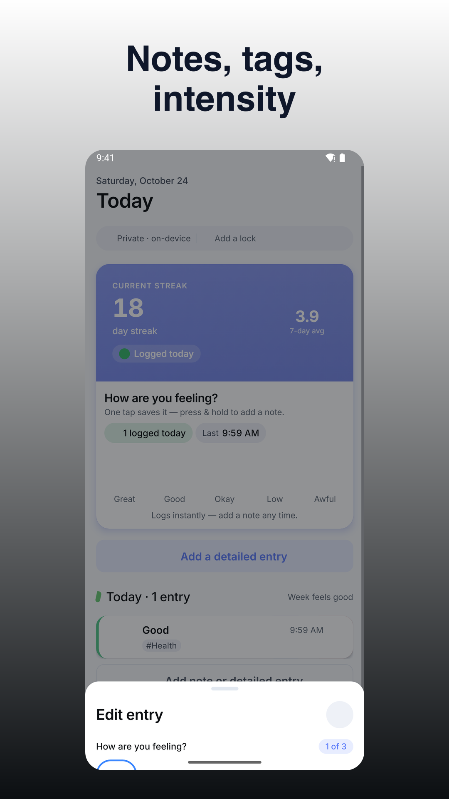
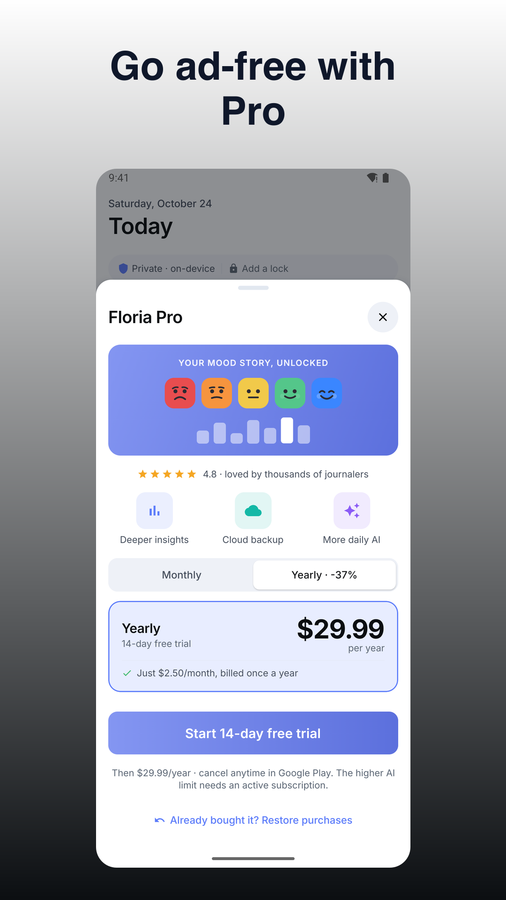

Floria: Mood Journal & Tracker
Floria mood journal with emoji mood tracker—private, fast, and flexible.





Floria mood journal puts one‑tap logging first so you can capture how you feel in under a second and see clear weekly highlights without clutter. It’s private by default, works offline, and doesn’t require an account.
Why Floria
• One tap to log a mood with your chosen emojis
• Optional notes, tags, and intensity for richer context
• Weekly highlights that stay simple and useful
• Private on your device with a free lock and encrypted backups
• Thoughtful reminders that fit your day
Core features
• One‑tap emoji mood logging: Tap an emoji to save instantly with an undo option.
• Custom moods and colors: Add, rename, reorder; choose emoji and set an optional 1–10 intensity slider.
• Multiple moods per entry: Add up to three moods plus unlimited custom tags (e.g., Work, Sleep).
• Quick note editor: Inline expand to full screen; supports headings, bold/italic, and lists with fast autosave.
• Fair streaks: Set your day start (0–6 AM) and a grace window to avoid unfair breaks; handles timezones/DST.
• Calendar & history: Month view with color intensity, search by text/tags/emoji, and backfill past days.
• Reminders your way: Multiple times, day‑of‑week schedules, and hourly ranges with snooze options.
• Insights & weekly summary: Week/month/custom ranges with weighted averages, top tags, time‑of‑day patterns. Optional note analysis can add sentiment to summaries (see AI disclosure below).
• Backups & restore: Create encrypted local backups, schedule automatic backups, keep version history, and restore with a preview and audit log.
• Export your data: Free CSV/JSON exports with timestamps, moods, intensity, tags, sentiment scores, note length, and media references. Pro adds styled PDF/CSV with filters and charts.
• Security lock: Free PIN/biometric lock with auto‑lock timer and a clear forgot‑PIN flow (restore from encrypted backup).
• Privacy screen & anonymous mode: Mask previews, wipe data with confirmations, and see exactly how your data is protected.
• Themes & accessibility: System dark mode, high‑contrast option, large tap targets, and support for Dynamic Type.
What’s free
• All core logging: moods, multi‑mood, tags, rich notes
• Calendar, streaks, weekly/monthly insights
• Multiple reminders with snooze
• Security lock (PIN/biometric)
• Local encrypted backups and restores
• Basic CSV/JSON exports
• Light, unobtrusive ads in Settings (removed in Pro)
What Pro adds
• Advanced insights over custom ranges (deeper tag/time‑of‑day views)
• Styled PDF/CSV reports with filters and charts
• Custom themes and icon packs
• Higher media limits and batch media reference export
• Cloud backup/sync with email code login (encrypted in transit and at rest)
• Removes ads, priority support, and early access toggles
Privacy & data
• Works offline; no account required to use the app
• Your data stays on your device; you can export it anytime
• Encrypted local backups with your passphrase
• Cloud backup/sync (Pro) uses encryption in transit and at rest
AI disclosure
• Optional only: If you choose, you can request sentiment/summary of selected note text.
• When you request analysis, the note text you select is sent to OpenAI via our server to process your request; it is not used for training by us.
• You can use the app fully without AI features.
Subscriptions & purchase
• Clear monthly/yearly options with free trial where offered and a lifetime unlock
• See price and period before purchase; manage or cancel in your store account settings
• Restore purchases anytime from Settings
Friendly reminders, instant saves, and trustworthy privacy make it easy to build a mood habit you’ll keep. Try Floria today and log your first mood in seconds.
Support: jeets98e@gmail.com